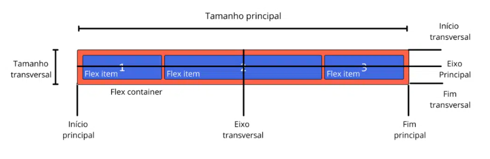
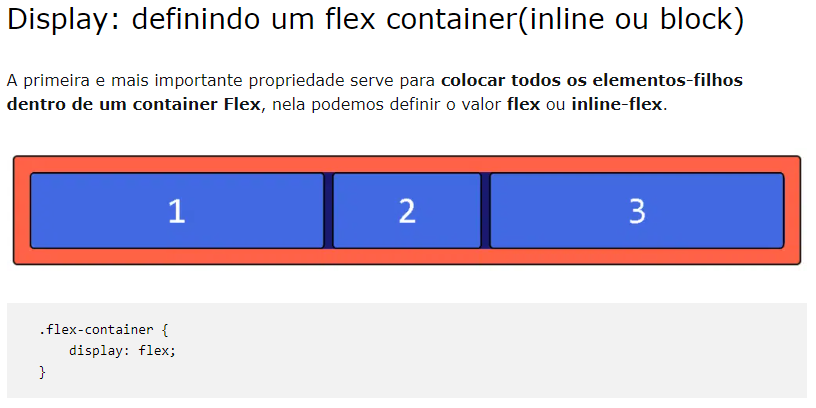
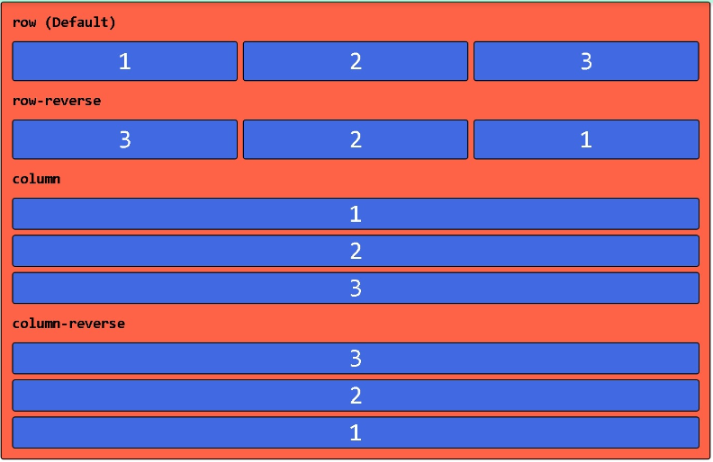
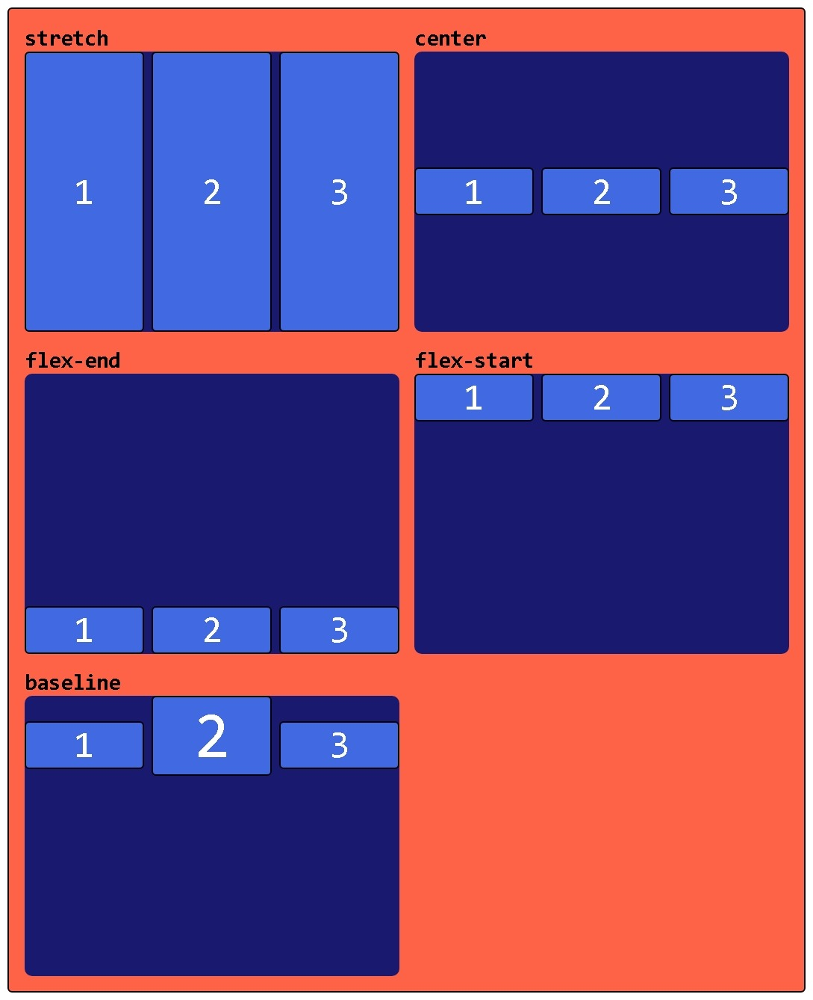

Atividade individual
O Módulo de Caixa Flexível , geralmente chamado de flexbox , foi projetado tanto como um modelo de layout unidimensional quanto como um método capaz de organizar espacialmente os elementos em uma interface, além de possuir recursos avançados de segurança.
É o principal elemento que envolve todos os itens de uma estrutura flex, nele é definido a propriedade display: flex.
É o principal elemento que envolve todos os itens de uma estrutura flex, nele é definido a propriedade display: flex.
1
2
3
4
Para entender as propriedades do Flexbox, devemos primeiro entender os seus 2 principais conceitos: Eixos Flex (Flex Axis) e Linhas Flex (Flex Lines). Toda essa ideia é baseada nos eixos que determinam as direções dos itens que estão dentro de um container flex.
A ilustração a seguir mostra quais os eixos definidos num container flex:

Eixo principal
É o eixo da linha do Flexbox onde os itens serão alocados. Por padrão, é definido sendo horizontal (row), mas pode ser mudado através da propriedade flex-direction.
Eixo Transversal
É o eixo perpendicular ao principal, ou seja, é um eixo que depende da direção do principal: se esse for horizontal a transversal vai ser vertical.
Início principal e Fim principal
São as bases de início e fim para os itens do container, também podem ser alterados por meio da propriedade flex-direction.
Início Transversal e Início Transversal
SNesse caso, são o início e fim das linhas transversais adicionadas ao container. São uma parte muito importante para o alinhamento vertical usando a propriedade align-items que veremos logo mais.
Propriedades CSS para o flex container
Para entender melhor os conceitos do Flexbox temos que entender todas as propriedades disponíveis para o Flex container. Separamos logo abaixo os principais atributos do elemento-pai:
A ilustração a seguir mostra quais os eixos definidos num container flex:
Display: definindo um flex container(inline ou block)
A primeira e mais importante propriedade serve para colocar todos os elementos-filhos dentro de um container Flex, nela podemos definir o valor flex ou inline-flex.

Flex-direction: definindo em qual direção o elemento flex será exibido
Aqui podemos escolher a direção na qual queremos apresentar os nossos itens. a partir do eixo principal conseguimos definir a direção que deve ser seguida. Imagine que o Flex container é um elemento que junta vários elementos-filhos em uma única direção e essa direção pode ser trocada com o flex-direction.


Flex-wrap: gerando quebras de linhas automática
Se você tentou utilizar o Flexbox mas se deparou com problemas na quebra de linha, saiba que esse comportamento é o padrão da ferramenta. Com a propriedade flex-wrap definimos se queremos ou não quebrar a linha ou até mesmo se queremos quebrar a linha “reversamente”.
.flex-container { flex-wrap: nowrap | wrap | wrap-reverse; }
Flex-flow: definindo os eixos principal e transversal do container
Nessa propriedade, temos a junção do flex-direction com o flex-wrap, formando assim uma propriedade chamada shorthand, quando uma mesma declaração contém vários valores, como é o caso em algumas propriedades das cores. Consequentemente, temos a declaração dos eixos principais e transversais por meio desse campo. O valor padrão é row nowrap.
Flex-flow: definindo os eixos principal e transversal do container
Nessa propriedade, temos a junção do flex-direction com o flex-wrap, formando assim uma propriedade chamada shorthand, quando uma mesma declaração contém vários valores, como é o caso em algumas propriedades das cores. Consequentemente, temos a declaração dos eixos principais e transversais por meio desse campo. O valor padrão é row nowrap.
Propriedades CSS para os flex items
Flexbox align-items: alinhando os elementos no eixo transversal
Aqui temos uma propriedade que altera a ocupação dos itens no eixo transversal dentro do Flex container. Temos os seguintes valores possíveis:

stretch (padrão): Os itens são esticados para preencher todo o espaço vazio do eixo transversal.
flex-start: Os itens são alocados no começo do eixo transversal.
flex-end: Os itens são postos no fim do eixo transversal.
center: Os itens são distribuídos no meio do eixo transversal.
baseline: Por último, temos o alinhamento a partir da primeira letra do texto de cada item.